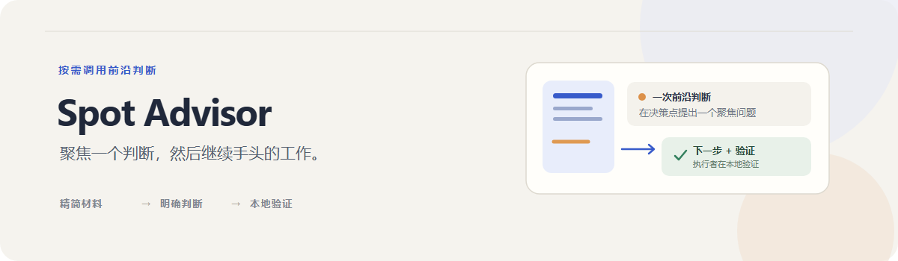
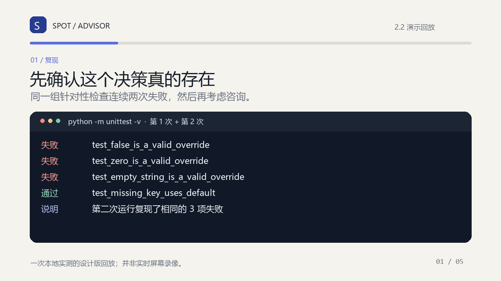

先在本地查清楚
编程智能体检查测试、依赖、fixture 和当前版本，并决定哪些证据应该放进咨询材料。
面向编程智能体的技能 · 2.2 版
把证据和眼前的决策交给前沿模型，得到一个建议和一种验证方法。真正的代码工作仍由你的编程智能体负责。
预览不需要账号、API Key，也不会调用模型。

01 — 什么时候有用
先运行相关的本地检查。如果证据仍然留下了会改变后续操作的分岔，Spot Advisor 会帮助当前智能体针对这个分岔提问，而不是把整个任务交出去。
编程智能体检查测试、依赖、fixture 和当前版本，并决定哪些证据应该放进咨询材料。
预览包含目标、约束、观察结果和验收方式的精简问题。只有答案可能改变下一步时才发送。
顾问返回结论、具体行动、验证步骤和风险。执行者负责修改代码并在本地复查。
边界小，责任清楚。Spot Advisor 不会自行读取仓库或修改文件。证据由执行者选择，建议由执行者落实，最终结果也由执行者验证。
python skills/advisor/scripts/ask_expert.py \
--preview --protocol v2 \
--question "测试期望 False 却得到了默认值。
应该改什么，又该怎么验证？"目标保留明确设置的 False 覆盖值。
证据回退逻辑使用了 value or default。
决策哪种修改能安全区分缺少的键？
验证False 仍是 False；缺少的键使用默认值。

03 — 接入现有工作流
可搭配 Codex、Claude Code 或兼容网关使用。顾问路由和凭据取决于你的环境；在配置这些之前，可以先运行离线预览。
npx skills add spot-advisor/spot-advisor --skill advisor
按提示选择要安装的智能体。手动安装方式见配置指南。
04 — 证据和边界都说清楚
这项公开修复比较在 48 个任务上测试了两种不同工作流。它只能说明本轮观察到的结果，不能证明 Spot Advisor 节省总 Token 或保持了相同的修复质量。
价格估算并不完整。只有能够计价的请求才可估算 API 等效价格：82.82 美元 vs 4.22 美元。Astra 有 4 个请求、Spot Advisor 有 8 个请求无法计价，因此整轮成本和净节省仍然未知。研究也没有证实修复质量相当。
05 — 市场与成熟度
技能和离线预览可以使用，公开研究提供了一个可核查的起点。但研究尚未证明修复质量相当或整轮节省；外部用户的重复使用和付费意愿仍未知。
下一项实验：在真实开发任务中重复测试决策点咨询，并加入不咨询的对照、盲评、完整用量回执和独立验证结果。
查看替代方案、采用障碍和研究计划问题更小，验证更明确